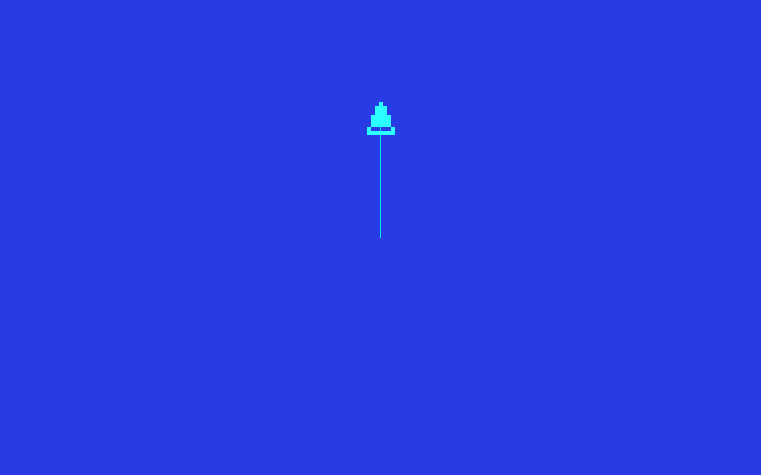

GoLogo
Un Logo bilingue français-anglais. Vous écrivez, la tortue obéit.
GoLogo
GoLogo sert à programmer en Logo. Logo est un langage de programmation très simple, inventé pour apprendre. Au centre, il y a une petite tortue affichée à l'écran : on lui donne des ordres (avance, tourne, lève ton crayon...), elle obéit et laisse une trace derrière elle. En la dirigeant, on dessine, et petit à petit on apprend à programmer.
Avec GoLogo, vous tapez une phrase et il se passe quelque chose aussitôt.
AVANCE 100, et la tortue trace un trait. Vous changez le nombre, le
dessin change. Vous vous trompez, vous le voyez tout de suite. Cette boucle
immédiate (taper, regarder, recommencer) est au cœur de Logo : le programme
cesse d'être une idée abstraite, il devient un personnage que l'on pilote.
Et la tortue ne s'arrête pas aux carrés. Avec les mêmes briques (boucles, variables, procédures), on passe aux fractales, aux dessins animés, et à de vrais petits jeux.
GoLogo est un interpréteur du langage Logo, conçu pour fonctionner sur les ordinateurs d'aujourd'hui sans rien sacrifier à la simplicité d'origine.
Le langage s'inspire du Logo français tel qu'on le pratiquait sur les micro-ordinateurs des années 1980, notamment le MO5 de Thomson. Depuis, il a été étendu pour rester en phase avec les Logo actuels et pour offrir des possibilités supplémentaires : musique, souris, fichiers, itérateurs, gestion des erreurs, récursion sans limite de profondeur, et bien d'autres choses.
GoLogo cherche à retrouver le look and feel du Logo SOLI de 1984 (l'écran, la tortue, l'esprit des commandes), mais ce n'est ni un clone ni une émulation : il ne rejoue pas le code d'époque et ne reproduit pas le MO5 octet par octet. Au contraire, il prolonge ce Logo bien au-delà de ce que la machine de l'époque permettait : des facilités et des instructions en plus pour rester compatible avec les autres Logo, mais aussi des entiers exacts de taille illimitée, de vrais tableaux, piles et files, la lecture et l'écriture de fichiers, et assez de souffle pour mener de gros calculs. L'esprit reste celui d'un langage qu'on apprend enfant ; la puissance, elle, suffit aujourd'hui à résoudre de vrais problèmes.
Un peu d'histoire
Logo est né à la fin des années 1960, à la rencontre des mathématiques et de la pédagogie. On le doit surtout à Seymour Papert, un mathématicien qui avait travaillé aux côtés du psychologue Jean Piaget, entouré de Wally Feurzeig et Cynthia Solomon. Leur idée était neuve : donner aux enfants un véritable langage de programmation, pensé pour eux, où l'on apprend en faisant et en expérimentant. La tortue, qu'on pilote pas à pas, est devenue le symbole de cette démarche : un objet concret pour réfléchir, se tromper, recommencer. Papert a raconté tout cela dans son livre Mindstorms (1980).
En France, beaucoup d'écoliers ont découvert la programmation grâce au Plan Informatique pour Tous, lancé en 1985, qui a équipé les écoles d'ordinateurs, souvent des Thomson. C'est là que toute une génération s'est initiée au code, fréquemment avec Logo, et en particulier avec le Logo de la société S.O.L.I. sur le MO5.
GoLogo est un environnement de programmation amusant qui s'inspire directement de ce Logo-là, autant par le langage que par l'allure générale. Mais pour ne pas rester enfermé dans les années 80, GoLogo ajoute un jeu d'instructions étendu qui ouvre grand le champ des possibilités offertes par le langage.
Ce que vous pouvez faire avec GoLogo
- Dessiner : la tortue trace des figures géométriques selon vos instructions, du simple carré à la fractale la plus complexe.
- Programmer : vous définissez vos propres procédures, créez des variables, construisez des boucles et des conditions, et composez tout ça librement.
- Jouer avec les données : mots, listes et nombres se manipulent avec la même facilité, et de vrais tableaux, piles et files prennent le relais quand il y a beaucoup à ranger.
- Calculer juste : des entiers exacts de taille illimitée (une factorielle
géante tombe juste, au chiffre près), et de quoi montrer un nombre en hexadécimal ou en
binaire (
HEXA,BINAIRE). - Faire de la musique : la primitive
JOUEjoue des notes sur plusieurs octaves, avec choix du timbre. - Interagir : lire le clavier, interroger la souris ou les manettes, afficher du texte à n'importe quelle position de l'écran.
- Lire et écrire des fichiers : vos procédures et vos dessins s'enregistrent sur disque et se rechargent à la session suivante, et un programme peut lire ou écrire ses propres fichiers texte.
Pour qui ?
GoLogo convient aussi bien à un enfant qui découvre la programmation qu'à un adulte qui souhaite retrouver un environnement qu'il a connu sur un ordinateur scolaire des années 80. Le langage Logo a été conçu dès l'origine pour être immédiatement accessible : chaque instruction a un effet visible tout de suite, et on progresse naturellement de la commande isolée au programme complet.
Si vous connaissez déjà un autre Logo, vous retrouverez vos repères : GoLogo reconnaît la plupart des commandes des Logos de référence.
Démarrage rapide
Au lancement, l'écran ne contient que l'invite ? : GoLogo
démarre en mode texte, c'est là que vous tapez vos instructions. Pour faire
apparaître la zone graphique, tapez MT (Montre Tortue) et appuyez sur
Entrée :
? MTLa zone graphique apparaît, et en son centre un petit personnage en forme de flèche, la tortue :
La tortue tient un crayon. Quand elle se déplace, ce crayon laisse une trace derrière elle. Tapez maintenant :
? AVANCE 100La tortue avance de 100 pas tout en traçant un trait depuis sa position de départ. Voici le résultat : la tortue s'est déplacée vers le haut, et la ligne marque le chemin parcouru.

AVANCE 100 : la tortue monte de 100 pas et laisse un trait.
Pour tracer un carré d'un seul coup :
? REPETE 4 [ AV 50 TD 90 ]C'est tout, vous venez d'écrire votre premier programme Logo. La suite de cette documentation vous explique comment aller plus loin, à votre rythme.
Organisation du manuel
| Section | Contenu |
|---|---|
| Prise en main | Comment lancer GoLogo, utiliser le REPL, saisir ses premières instructions, ouvrir l'éditeur. Un guide pas à pas pour débuter. |
| Du carré au jeu vidéo | Un parcours guidé en douze étapes, du premier trait jusqu'à ton propre jeu (un casse-brique). La meilleure porte d'entrée pour débuter. |
| Le langage Logo | Introduction complète au langage : données, variables, procédures, boucles, conditions, graphisme. L'essentiel pour comprendre et écrire des programmes. |
| Programmes exemples | Une collection de programmes annotés, du plus simple au plus élaboré, que vous pouvez recopier et modifier librement. |
| Interface & raccourcis | Description de l'écran, de l'éditeur de procédures, du navigateur d'aide, et tableau complet des raccourcis clavier. |
| Toutes les commandes | Référence complète des ~150 instructions de GoLogo, classées par catégorie, avec paramètres et exemples. |
| Index des commandes | Liste alphabétique de toutes les commandes et de leurs alias, avec renvoi vers la description correspondante. |
Conventions de ce manuel
Les instructions Logo s'écrivent en majuscules dans ce manuel. Pas besoin de maintenir la touche Majuscule : GoLogo convertit automatiquement en majuscule chaque caractère que vous tapez. Cela limite les erreurs et facilite la frappe au clavier pour les plus jeunes. Les exemples de code apparaissent sur fond sombre :
REPETE 36 [ AV 10 TD 10 ]Les paramètres variables sont indiqués en italique ou entre chevrons :
AV n signifie que vous remplacez n par un nombre.
Dans les tableaux de commandes, le type de chaque instruction est précisé :
- C (commande) : produit un effet, ne retourne pas de valeur.
- O (opération) : calcule et retourne une valeur.
- P (prédicat) : retourne
VRAIouFAUX.
À propos de GoLogo
GoLogo
(C)2024-2026 Cyril LAMY
C'est un logiciel libre, distribué sous licence GPL v2.
Il est écrit en Go et s'appuie sur quelques bibliothèques libres : Gio (interface graphique multiplateforme) et oto (son).
La documentation du Logo SOLI d'origine, consultée pour ce projet, se trouve sur le site de l'émulateur Thomson DCMOTO de Daniel Coulom. Pour en savoir plus sur le langage Logo et son histoire, voir l'article Wikipédia et le site de la Logo Foundation.